Arcane Curiosities Vol.1
Twelve animated pixel-art props for top-down fantasy games: a treasure chest and a mimic in four facings, a bubbling cauldron, a brazier, an hourglass, an orrery and more. One 32-colour palette, sprite sheets with frame JSON, Godot 4 scenes and an AI-agent SKILL.md.
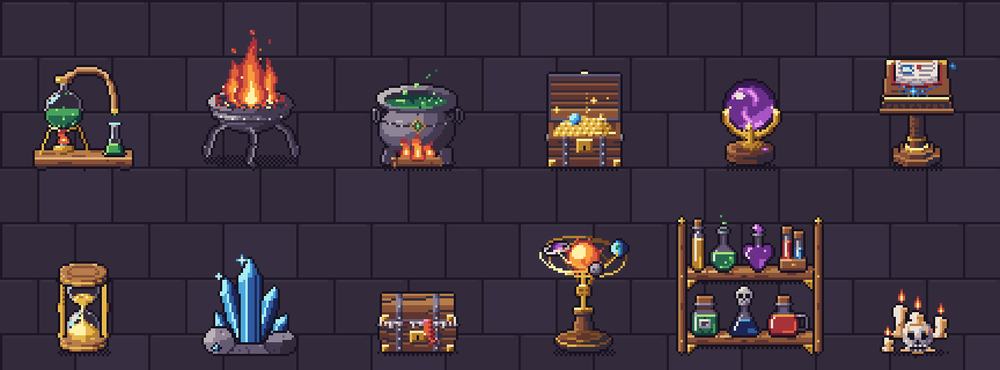
All 12 props · 52 animations
Every prop below is shown at its real frame rate. Sprites are drawn in top-down 3/4 view (key light top-left) at 32–64 px, with one 32-colour palette shared by every Arcane Curiosities volume, so props from different volumes sit together in one scene.
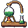
Alembic
Glass flask boiling over a small burner; a brass swan-neck tube drips into a receiving vial. Alchemy labs, potion shops.
48×48 px · 3 animations: idle-blue (16f), idle-green (16f), idle-violet (16f)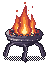
Brazier
Wrought-iron brazier on three curved legs with a tall fire and rising embers; 'unlit' is cold coals. Halls, shrines, dungeon lighting.
48×64 px · 5 animations: idle-bile (12f), idle-fire (12f), idle-soul (12f), idle-witch (12f), unlit (1f)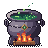
Cauldron
Iron cauldron over a log fire; the brew bubbles, swirls and steams, a rune sigil pulses on the belly. Witch huts, crafting stations.
48×48 px · 3 animations: idle-blue (12f), idle-green (12f), idle-violet (12f)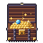
Chest
Oak treasure chest with iron bands and brass caps; opens on its hinge to a heap of gold and a gem. Loot, rewards.
48×48 px · 4 facings · 12 animations: closed-down (12f), closed-left (12f), closed-right (12f), closed-up (12f), open-down (8f, once), open-left (8f, once), open-right (8f, once), open-up (8f, once), opened-down (12f), opened-left (12f), opened-right (12f), opened-up (12f)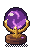
Crystal Ball
Glass orb on a brass claw stand; mist swirls inside and an eye fades in and out. Fortune tellers, magic shops, NPC desks.
32×48 px · 3 animations: idle-blue (16f), idle-green (16f), idle-violet (16f)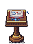
Grimoire Lectern
Carved lectern with a grimoire floating above it, turning its own pages, glyph motes orbiting. Libraries, save points, lore.
48×64 px · 4 facings · 6 animations: idle-down-green (16f), idle-down-violet (16f), idle-down (16f), idle-left (16f), idle-right (16f), idle-up (16f)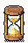
Hourglass
Hourglass in a brass frame; sand pours in 'idle', 'flip' tumbles it over and lands. Timers, time magic, UI-in-world.
32×48 px · 2 animations: flip (10f, once), idle (16f)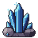
Mana Crystal
Cluster of faceted crystal spires on a stone base; a light pulse climbs the spires. Mana sources, mining nodes.
48×48 px · 4 animations: idle-blue (12f), idle-green (12f), idle-red (12f), idle-violet (12f)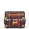
Mimic
A treasure chest that is alive: breathing lid, tongue, teeth; 'bite' snaps and chomps. Trap chests, enemies.
48×48 px · 4 facings · 8 animations: bite-down (10f), bite-left (10f), bite-right (10f), bite-up (10f), idle-down (12f), idle-left (12f), idle-right (12f), idle-up (12f)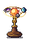
Orrery
Brass clockwork orrery: three planets orbit a glowing sun on tilted rings, passing in front and behind. Observatories, puzzles.
48×64 px · 2 animations: idle-soul (24f), idle (24f)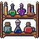
Potion Shelf
Wall-mounted two-tier shelf with seven different bottles; glints travel, a flask bubbles, a skull bottle glows. Shops, labs (hang on a wall).
64×64 px · 1 animations: idle (16f)Skull Candles
A skull in a wax pool with melted candles; flames flicker independently. Crypts, altars, witch dens.
32×32 px · 3 animations: idle-fire (12f), idle-soul (12f), idle-witch (12f)What's in the ZIP
PNG sprite sheets with frame JSON (anchor at the feet), GIF previews, the palette (.gpl, .hex, .png), a Godot 4 project with a SpriteFrames resource and scene per prop plus a demo scene, catalog.json and SKILL.md for AI coding agents. Commercial use in your games is allowed; reselling or redistributing the art as assets is not.